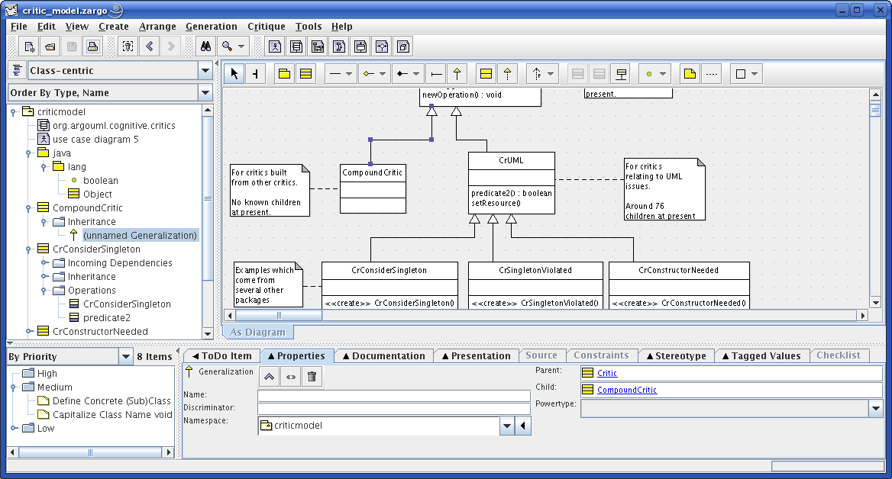

La ventana principal de ArgoUML tiene una
barra de herramientas,
una barra de menú
y cuatro paneles principales:
explorador,
editor,
tareas pendientes (to do), y
detalles.
Los paneles pueden ser redimensionados desplazando las barras divisorias que separan a los paneles.
Selecciona cualquiera de los siguientes links para obtener más información sobre los tabs del panel de detalles:
Volver a ArgoUML Tours
Volver a ArgoUML Inicio